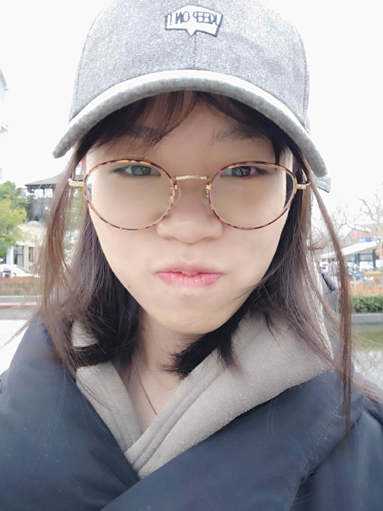

Lu Zhang

Ph.D. Student
Department of Computer Science and Engineering
The Chinese University of Hong Kong
Email: zhanlgu330 [at] gmail.com
GitHub
Biography
I'm a Ph.D. student at the Department of Computer Science and Engineering, The Chinese University of Hong Kong, under the supervision of Prof. Bei Yu since Fall 2018. Before that, I received my bachelor's degree in Microelectronics from Fudan University.
My research interests include machine learning and computer vision.
Publication
Conference Paper
- Hao Geng, Haoyu Yang, Lu Zhang, Jin Miao, Fan Yang, Xuan Zeng, Bei Yu, “Hotspot Detection via Attention-based Deep Layout Metric Learning”, IEEE/ACM International Conference on Computer-Aided Design (ICCAD), Nov. 2–5, 2020.
- Zhuolun He, Lu Zhang, Peiyu Liao, Yuzhe Ma, and Bei Yu. “Reinforcement Learning Driven Physical Synthesis”. IEEE International Conference on Solid -State and Integrated Circuit Technology (ICSICT), Kunming, 2020. (Invited Paper)
- Zhuolun He, Yuzhe Ma, Lu Zhang, Peiyu Liao, Ngai Wong, Bei Yu, and Martin D. F. Wong. “Learn to Floorplan through Acquisition of Effective Local Search Heuristics”. IEEE International Conference on Computer Design (ICCD), 2020.
- Yuzhe Ma, Zhuolun He, Wei Li, Tinghuan Chen, Lu Zhang, and Bei Yu. “Understanding Graphs in EDA: From Shallow to Deep Learning”. ACM International Symposium on Physical Design (ISPD), Taipei, 2020. (Invited Paper)
Zheng Zhao, Derong Liu, Meng Li, Zhoufeng Ying, Biying Xu, Lu Zhang, Bei Yu, Ray T. Chen, David Z. Pan, “Hardware-software Co-design of Slimmed Optical Neural Networks”, IEEE/ACM Asian and South Pacific Design Automation Conference (ASPDAC), Tokyo, Jan. 21–24, 2019.
Lu Zhang, Miaojing Shi, Qiaobo Chen, “Crowd Counting Via Scale-adaptive Convolutional Neural Network”, WACV 2018. (preprint)(code)
Journal Paper
- Wei Li, Yuzhe Ma, Qi Sun, Lu Zhang, Yibo Lin, Iris Hui-Ru Jiang, Bei Yu, David Z. Pan, “OpenMPL: An Open Source Layout Decomposer”, accepted by IEEE Transactions on Computer-Aided Design of Integrated Circuits and Systems (TCAD)